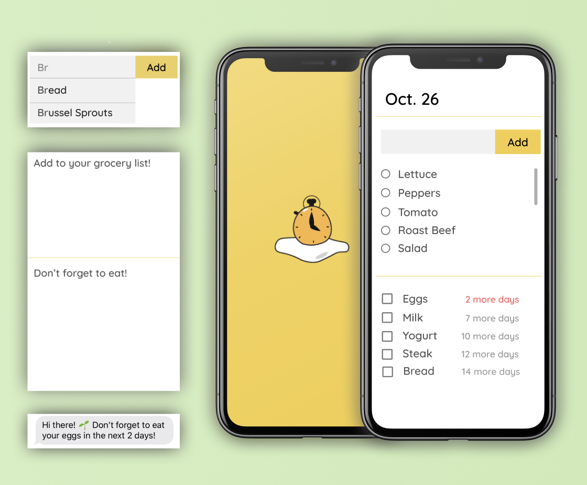
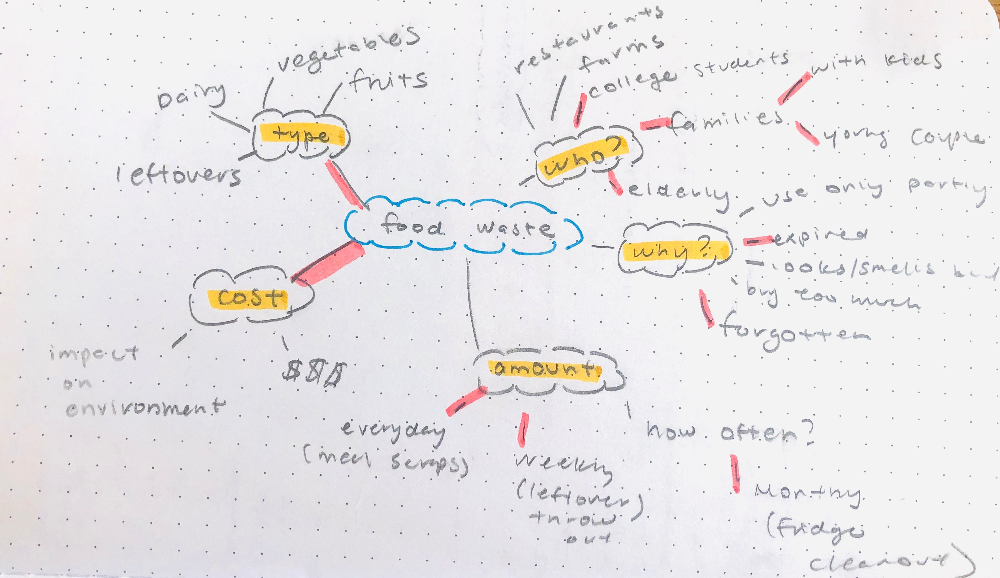
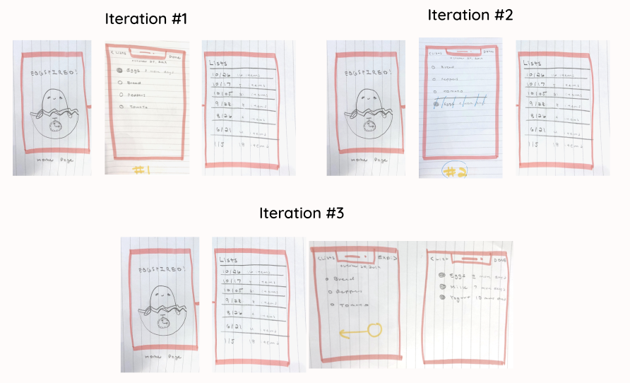
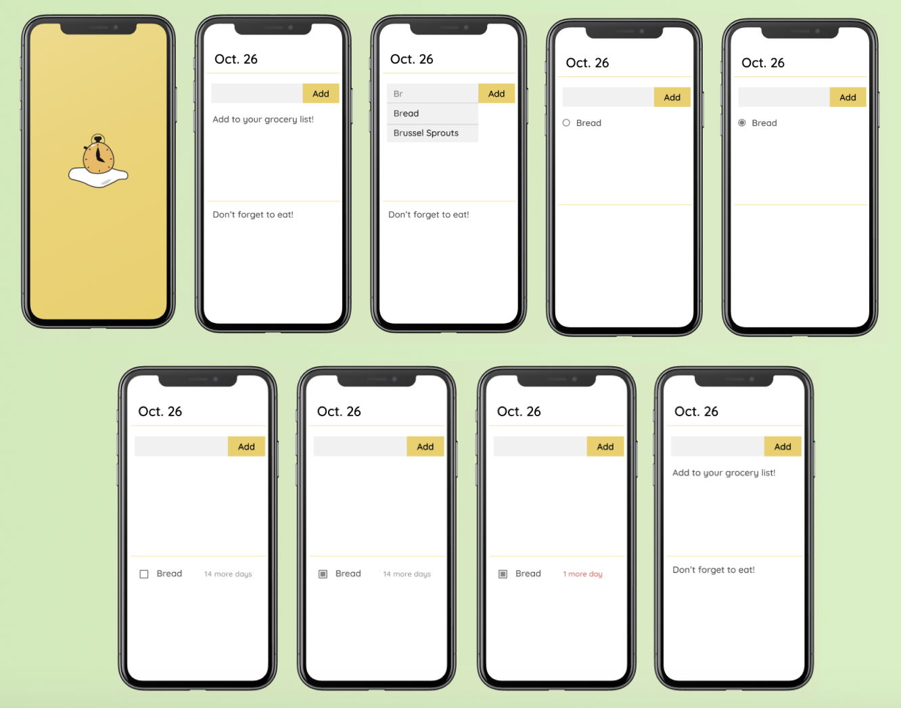
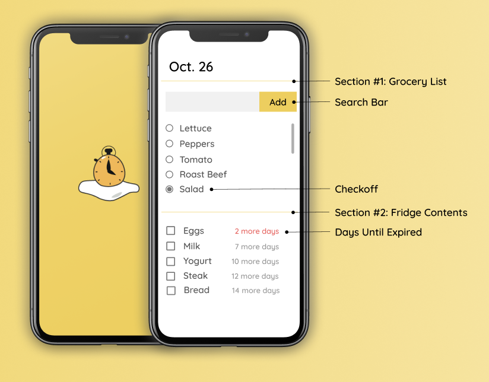
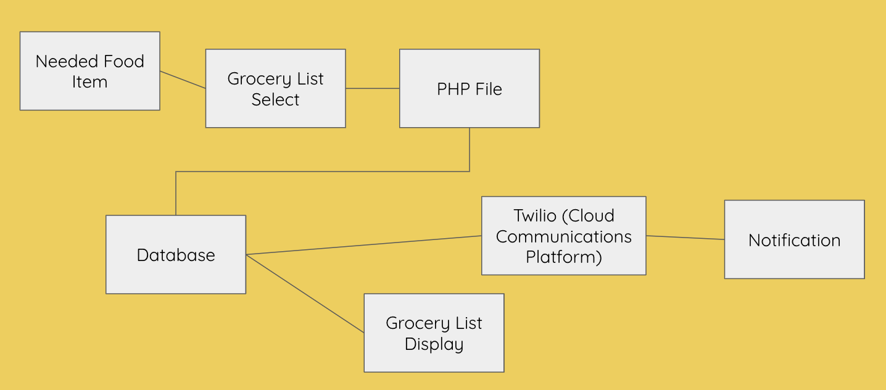

Eggspired is a 36 hour webapp project created at SD Hacks as part of the sustainability challenge. Eggspired has the same functionality of a grocery list with the additional feature of reminding users when their food is about to expire through a notification.
The Team: Amy An, Quylan Mac, Parth Shah, Vedparkash Singh
My Role: I was responsible for idea generation through user research, creating ui elements, envisioning the user experience, providing a high fidelity prototype for the coding team, and some front end development.
I started the design process by brainstorming our problem: food waste. After brainstorming about our users, their problems, and other topics related to food waste, I was able to gain a better understanding of what would be the most optimal technology in terms of usability and helpfulness.

User Demographics:
People who are busy or forgetful like families or elderly
People who are not knowledgeable about when their food expires like students or young adults
User Challenges:
Hard to remember expiration dates
Can't physically see everything in fridge
Overbuying food
User Goals:
Save money on groceries
Be less wasteful
Stay organized and healthy

1. Finalized low fidelity wireframe
My first few designs played with the distinction between the foods that need to be purchased and the foods that were already obtained. I made serveral iterations that had different ways of creating a distinction between these two categories, including: having the items closest to their expiration date at the top of the list (Iteration #1), having two distinct sections for both on one screen (Iteration #2), and splitting up the sections between two screens (Iteration #3).
I presented these three iterations to potential users who provided more positive feedback on iterations #2 and #3. However, both have trade offs for different types of users. For example, by having all items appear on one screen it is easy for the user to see what groceries they have and what they need (Iteration #2), but this limits the amount of food that can appear. What happens when the user has alot of groceries? This issue is solved by iteration #3 through splitting the food items into two screens. However, since users must navigate through different screens, it will take them more time to identify their items.
2. Added check off features
"What if I use my food before it expires?
After watching potential users interact with the paper prototypes, I realized I had overlooked a key feature. Users must be able to check off if they used an item from their fridge. These items must be distinguished from purchased items, meaning that there must be two distinct checks for each item, once when the item is bought and once when the item is used.

After reviewing user feedback from my low fidelity prototypes, my final iterations consisted of one screen that was split up into two sections. The first section is for users to add food items to their grocery list. They do this by typing in the name of the food item into the search bar which searches our database and provides suggestions for what item the user is adding. Once the item is added, it can either be checked off which indicates that the user has bought the item, or removed which takes the item off the list.
The second section is for the purchased items. These are items that the user has already checked off from their grocery list. In this section, the item is followed by the number of days until its expiration date. If the user uses the item before it expires, they can check it off and it will be removed from the list. Once an item nears its expiration date, it will turn red and notify the user through a text message to remind them to eat their food.


We used HTML, CSS, and Javascript for the front end of our webapp. For our backend, we webscraped data from eatbydate.com in order to create a database using MySQL, filled with each food item and their corresponding expiration dates. Finally, in order to alert the users with a notification we used the Twilio API which is a cloud communication platform that programmatically makes and recieves text messages.
This project gave me insight on what it was like to work on a diverse team in order to create a real, working product. This project differed from my previous design experience since my teamates were not fellow designers, but front end and backend developers. Working on this project together greatly improved my technical communication skills as well as my ability to adapt.
Since this project was made at a hackathon, there was a challenging time constraint of 36 hours. We encountered many problems that slowed down development progress. There were times when more attention to software was needed as opposed to design. Through this experience, I learned to be more adaptable by identifying and working on the task that is most needed at the time.
Takeaways and Learning Experiences:
Oversaw an entire design process from idea generation to high fidelity prototypes
Worked and communicated with diverse teamates
Adapted my skills in order to solve problems
Professionally presented product to judges, answered any questions and iterated on criticism